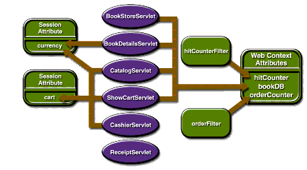

Sharing Information
Web components, like most objects, usually work with other objects to accomplish their tasks. There are several ways they can do this. They can use private helper objects (for example, JavaBeans components), they can share objects that are attributes of a public scope, they can use a database, and they can invoke other web resources. The Java servlet technology mechanisms that allow a web component to invoke other web resources are described in Invoking Other Web Resources.
Using Scope Objects
Collaborating web components share information via objects that are maintained as attributes of four scope objects. You access these attributes using the
[get|set]Attributemethods of the class representing the scope. Table 11-4 lists the scope objects.
javax.servlet.
ServletRequest
Figure 11-1 shows the scoped attributes maintained by the Duke's Bookstore application.

Figure 11-1 Duke's Bookstore Scoped Attributes
Controlling Concurrent Access to Shared Resources
In a multithreaded server, it is possible for shared resources to be accessed concurrently. In addition to scope object attributes, shared resources include in-memory data (such as instance or class variables) and external objects such as files, database connections, and network connections. Concurrent access can arise in several situations:
- Multiple web components accessing objects stored in the web context.
- Multiple web components accessing objects stored in a session.
- Multiple threads within a web component accessing instance variables. A web container will typically create a thread to handle each request. If you want to ensure that a servlet instance handles only one request at a time, a servlet can implement the
SingleThreadModelinterface. If a servlet implements this interface, you are guaranteed that no two threads will execute concurrently in the servlet's service method. A web container can implement this guarantee by synchronizing access to a single instance of the servlet, or by maintaining a pool of web component instances and dispatching each new request to a free instance. This interface does not prevent synchronization problems that result from web components accessing shared resources such as static class variables or external objects. In addition, the Servlet 2.4 specification deprecates theSingleThreadModelinterface.When resources can be accessed concurrently, they can be used in an inconsistent fashion. To prevent this, you must control the access using the synchronization techniques described in the Threads lesson in The Java Tutorial, by Mary Campione et al. (Addison-Wesley, 2000).
In the preceding section we show five scoped attributes shared by more than one servlet:
bookDB,cart,currency,hitCounter, andorderCounter. ThebookDBattribute is discussed in the next section. The cart, currency, and counters can be set and read by multiple multithreaded servlets. To prevent these objects from being used inconsistently, access is controlled by synchronized methods. For example, here is theutil.Counterclass:public class Counter { private int counter; public Counter() { counter = 0; } public synchronized int getCounter() { return counter; } public synchronized int setCounter(int c) { counter = c; return counter; } public synchronized int incCounter() { return(++counter); } }Accessing Databases
Data that is shared between web components and is persistent between invocations of a web application is usually maintained by a database. Web components use the JDBC API to access relational databases. The data for the bookstore application is maintained in a database and is accessed through the database access class
database.BookDBAO. For example,ReceiptServletinvokes theBookDBAO.buyBooksmethod to update the book inventory when a user makes a purchase. ThebuyBooksmethod invokesbuyBookfor each book contained in the shopping cart. To ensure that the order is processed in its entirety, the calls tobuyBookare wrapped in a single JDBC transaction. The use of the shared database connection is synchronized via the[get|release]Connectionmethods.public void buyBooks(ShoppingCart cart) throws OrderException { Collection items = cart.getItems(); Iterator i = items.iterator(); try { getConnection(); con.setAutoCommit(false); while (i.hasNext()) { ShoppingCartItem sci = (ShoppingCartItem)i.next(); BookDetails bd = (BookDetails)sci.getItem(); String id = bd.getBookId(); int quantity = sci.getQuantity(); buyBook(id, quantity); } con.commit(); con.setAutoCommit(true); releaseConnection(); } catch (Exception ex) { try { con.rollback(); releaseConnection(); throw new OrderException("Transaction failed: " + ex.getMessage()); } catch (SQLException sqx) { releaseConnection(); throw new OrderException("Rollback failed: " + sqx.getMessage()); } } }
All of the material in The J2EE(TM) 1.4 Tutorial is copyright-protected and may not be published in other works without express written permission from Sun Microsystems.